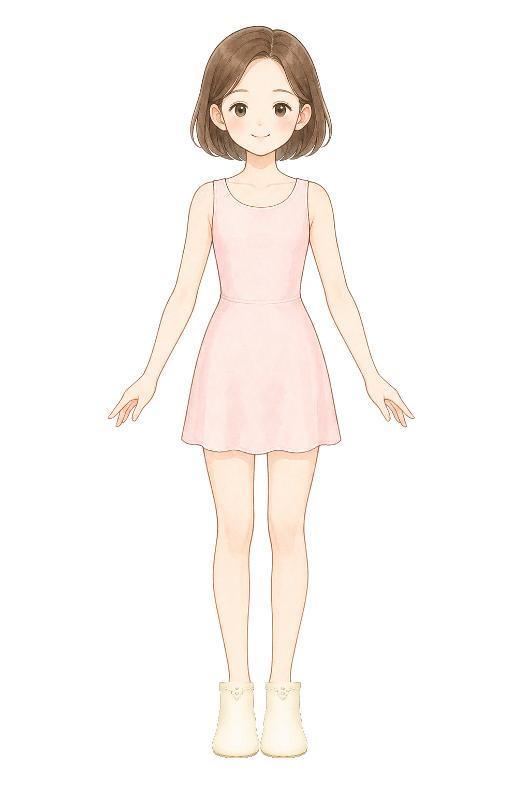

pair of slim short ankle boots only for a children princess dress-up game, original pastel storybook encyclopedia illustration matching a soft Japanese picture-book fashion encyclopedia, soft watercolor-like coloring, clean fine linework, front view boots only, no legs, no feet, no socks, no skin, no body, no mannequin, no shadow, pure white 1024 by 1536 canvas, soft rose pink ankle boots with a tiny ribbon detail on each boot, rounded toes that cover the full toes, narrow ankle width, left boot and right boot are the same size and separated as a matched pair, the top of each boot has a flat nearly horizontal cuff edge like a simple cut-off tube, solid boot surface up to the cuff, no visible boot interior, no oval opening, no hole at the top, no dark inside rim, no deep 3D mouth, not oversized, no toe lines, no foot outlines, no skin-colored details, no text, no watermark
boots
Boots: pearl flat cuff fit
ok
BaseCutout

Left normalizedRight normalizedComposite

pair of slim short ankle boots only for a children princess dress-up game, original pastel storybook encyclopedia illustration matching a soft Japanese picture-book fashion encyclopedia, soft watercolor-like coloring, clean fine linework, front view boots only, no legs, no feet, no socks, no skin, no body, no mannequin, no shadow, pure white 1024 by 1536 canvas, warm cream white ankle boots with very small pearl button details kept subtle, rounded toes that cover the full toes, narrow ankle width, left boot and right boot are the same size and separated as a matched pair, the top of each boot has a flat nearly horizontal cuff edge like a simple cut-off tube, solid boot surface up to the cuff, no visible boot interior, no oval opening, no hole at the top, no dark inside rim, no deep 3D mouth, not oversized, no toe lines, no foot outlines, no skin-colored details, no text, no watermark